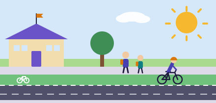

Tiempo
8:00
0 bien
0 mal
22 faltan
Movilidad activa y hábitos saludables · 4.º de Primaria

La OMS recomienda a niños y niñas moverse al menos 60 minutos al día. Jugar, correr y hacer deporte cuentan, y tu corazón lo agradece.
Letras J · Y · E · CIr andando o en bici al colegio es movilidad activa: haces ejercicio y contaminas menos.
Letras M · B · P · ICome frutas y verduras, bebe agua, duerme de 9 a 12 horas, y lávate las manos y los dientes.
Letras A · V · F · S · L · D · H · O · ZTodas las emociones son normales. Respirar hondo, dar las gracias y hablar con alguien te ayudan a sentirte mejor.
Letras G · N · T · R